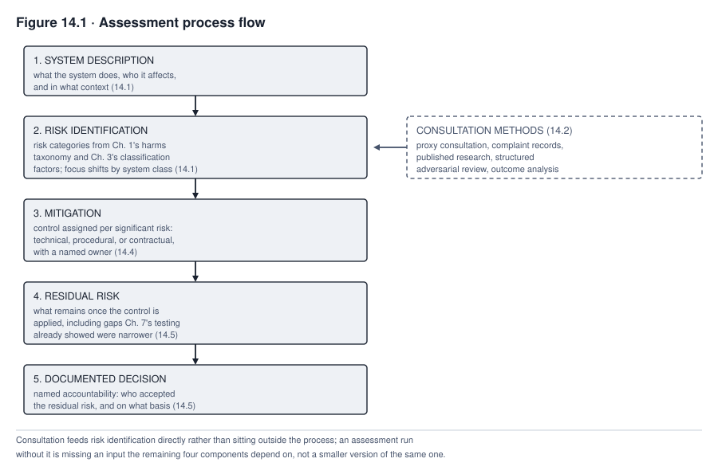
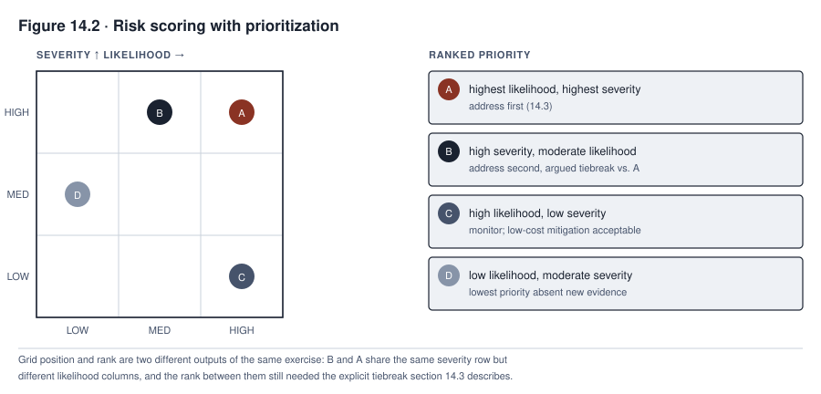

14. Risk Assessment and Management
Consider a constructed scenario, continuing the running TALENTSCREEN case. Calloway Industries ran an impact assessment on TalentScreen when it first licensed the tool for its manufacturing floor hires, and the assessment, on its own terms, was competent. It named the disparate-impact risk a practice like this can raise under Title VII where it produces an uneven effect without job-related justification, assigned a control, and documented who accepted what remained. What it never did, because no one on the assessment team thought to ask, was consult a single applicant the tool would screen. Eighteen months later, when Calloway extended the same tool to its logistics job family without redoing any of that work, the assessment that would have caught the extension’s different applicant population was not an assessment that failed. It was an assessment that was never run.
This chapter is about the structure that makes an impact assessment more than a form filled out once and filed. It covers the five components every assessment needs and the real methods available when the people most affected cannot be reached at all. It covers how to score risk without pretending a number is more precise than the judgment behind it, and how assessment turns into an actual control instead of a paragraph describing one. It closes with who is accountable for the risk a control does not remove, and what has to happen before an organization can claim an assessment still describes the system it was written for.
What you will be able to do
- Structure an impact assessment across its five components, ending in a documented decision with named accountability instead of an open-ended risk list
- Apply real methods for consulting stakeholders standard interview and workshop technique cannot reach, and state honestly what each method substitutes for and what it cannot recover
- Score and prioritize risk without manufacturing false precision, and force the explicit tradeoff a claim that everything is critical is designed to avoid
- Select controls by naming their actual mechanism, prevention, deterrence, detection, containment, correction, recovery, or compensation, instead of a bare reduce-or-detect label, and name the changes that should trigger reassessment before an organization discovers them the way Calloway did
14.1 The five components of an assessment
An impact assessment needs, at minimum, five components, and an assessment missing any one of them is missing something a reviewer will eventually ask for. Treat these five as a management spine, not a complete, legally sufficient assessment on their own. ISO/IEC 42005:2025 is the current international standard for AI system impact assessment, published in May 2025 and covering effects on individuals, groups, and society across the system lifecycle (checked 2026-09-13). The five components below are this chapter’s own minimum synthesis, not a summary of that standard, and an organization seeking ISO/IEC 42005 conformance needs to consult the standard itself, not this chapter. A legally mandated assessment type, a data protection impact assessment under GDPR Article 35 or a fundamental-rights impact assessment under the EU AI Act’s Article 27, adds its own required elements this spine does not by itself supply. Among them are necessity and proportionality, named affected groups, human-oversight design, a complaint mechanism, and, in some cases, a duty to consult a supervisory authority before proceeding. The first task of any assessment is identifying which legally mandated type, if any, applies, and layering that type’s specific requirements onto the spine below instead of treating the spine as sufficient by itself.
System description states what the system does, who it affects, and in what context, specific enough that a reader unfamiliar with the deployment could still evaluate the risk analysis that follows it. Risk identification names the risks across categories already established elsewhere, not a third scheme invented for this chapter. Those categories are the harms taxonomy Chapter 1 established and the classification factors Chapter 3 used to place the system in a risk tier in the first place. Mitigation states the control assigned to each significant risk. Residual risk names what remains once the control is applied, because a control is rarely complete removal. A documented decision, with named accountability, closes the assessment. Someone specific accepted the residual risk that remained, on a specific basis, and that acceptance is recorded rather than assumed.
Every system class carries the full cross-cutting harms taxonomy Chapter 1 established, privacy, security, safety, accessibility, intellectual property, and the rest, and no class is exempt from any of it. What differs across the three system classes, predictive, generative, and agentic, is which risk category needs the sharpest additional attention in the risk identification component, on top of that shared core. Predictive assessment gives particular emphasis to error and disparity. It tracks false positive and false negative rates, and whether either rate falls unevenly across populations. Generative assessment gives particular emphasis to content and misuse. It asks what a system might produce, fabricate, or be directed to generate outside its intended use. Agentic assessment gives particular emphasis to action and scope. It asks what the system can do rather than only what it might say, and how far its granted permissions actually reach. An assessment template built for one class’s emphasis, then applied unmodified to another, will underweight that other class’s sharpest risk in the risk identification component. This holds regardless of how well the other four components are executed. This is a difference of degree and design timing, not a difference of kind. Chapter 12 established that a first line operating an agent exercises a risk decision at a frequency a predictive system’s periodic monitoring cycle does not approach, which is why an assessment template built for periodic review needs an agentic-specific overlay.
14.2 Engaging stakeholders whom standard methods cannot reach
Standard consultation methods assume a participant who can be identified and reached. That participant might be reached through an interview, a workshop, or a survey sent to a known population. That assumption fails for some of the people an impact assessment most needs to hear from, but not automatically. The first step is not reaching for a substitute. It is a documented reachability and safety analysis asking whether the organization can build a safe, lawful channel to the affected population before concluding it cannot. That analysis checks not only whether people can be found but whether they could take part without an unreasonable burden, a language or accessibility barrier, or a realistic fear of retaliation. A population represented by a union, an advisory panel, a civil-society organization, or an ombuds service is not unreachable merely because it is diffuse. A public notice, a purposive sample, or a worker representative can sometimes reach applicants a one-to-one interview never could. TalentScreen’s applicants illustrate a population where that analysis can genuinely come back negative. They never interact with Calloway in any way that would let them be interviewed, most do not know a resume-screening tool evaluated them rather than a hiring manager, and Calloway had, and used, no worker-representative or advisory channel a hiring applicant population could route through. Where the analysis does come back negative, the honest response is a different method entirely, not a more diligent version of the same one. The analysis itself, recorded, is what distinguishes a genuinely unreachable population from one an assessment team simply did not try hard enough to reach.
Direct and representative engagement comes first wherever the reachability analysis allows it. Worker representatives, unions, advisory panels, civil-society organizations, ombuds services, accessible public notices, and purposive recruitment can all put an actual affected voice, or a trusted representative of one, into the process. Where none of that is feasible, several further approaches exist, each substituting for engagement in a specific and limited way instead of belonging to the same category as engagement itself. Proxy consultation works through an advocacy organization that speaks for the affected population’s interests even without access to the specific individuals a given deployment touches. A worker advocacy group familiar with hiring discrimination patterns can surface concerns a screened applicant would raise, without ever locating that applicant. Structured adversarial review assigns a specific person the explicit job of arguing the affected party’s interest inside the assessment process itself, ensuring that interest has a voice in the room even when its owner does not. This is the approach a properly run TalentScreen assessment would have used and did not. Two further sources are evidence, not engagement, and should be named that way rather than folded into the same list. Published research on comparable systems and populations brings in what other organizations and researchers have already documented about how similar tools affect similar groups, substituting general findings for this deployment’s specific population. Evidence from complaint and appeal records draws on what people have already said when a comparable system’s outcome touched them directly enough to prompt a formal objection, capturing real grievance but only from those who cleared the higher bar of filing one. Outcome analysis after deployment, evaluating who was actually rejected, hired, or advanced once the system is running, is evidence of a different kind again, arriving only after the decision it might have informed has already been made.
None of these methods, engagement substitutes or evidence sources alike, should be presented as solving the underlying problem, because none of them does. Proxy consultation speaks through an organization that cannot canvass every affected individual’s specific view. Structured adversarial review is an assigned advocate’s best argument, not the affected party’s actual voice. Published research describes populations similar to this one rather than this one. Complaint records surface only the grievances that cleared the effort of filing one, and outcome analysis arrives after the harm it might reveal has already occurred. An assessment using every one of them still has not consulted the people it is assessing risk to, and a chapter that implied otherwise would be teaching something false. What these methods do is put a documented, defensible effort in place of the silence a genuinely unreachable population would otherwise leave in the assessment. The honest record of an assessment names the reachability analysis performed, which method or methods were used as a result, and what each one could not recover, instead of presenting a substitute as equivalent to the engagement it stands in for.

Read Figure 14.1 as the five components in sequence, with consultation from section 14.2 feeding risk identification directly instead of sitting outside the process. The figure does not show it, but the same reachability analysis and engagement methods can, in practice, revise the system description, the risks identified, the mitigation chosen, and the residual-risk judgment, not just supply a single input to risk identification. Nor does the figure show the loop back from a documented decision to section 14.6’s reassessment triggers; a decision made here is not a hard stop, and it can reopen the same assessment later. An assessment run without engagement is not an assessment with a smaller gap but an assessment missing an input several later steps depend on. An assessment that never reopens is not a lighter-weight assessment but one silently governing a system it may no longer describe.
14.3 Risk scoring and prioritization
Likelihood and severity are the starting pair a risk score combines, not the complete list of what a scoring decision actually needs. Exposure, scale, duration, reversibility, how quickly a problem would be detected, the underlying uncertainty, which rights are affected, how harm is distributed across a population, and the strength of controls already in place can all matter as much as the starting pair. And a legal or rights-based red line is not something a favorable score on some other factor can offset. The discipline the scoring step actually requires is resisting the appearance of precision the numbers suggest. A risk labeled “likelihood 3, severity 4” on a five-point scale is not a measurement. It is a structured judgment call given a numeric label. Multiplying the two into a combined score is not a calculation an ordinal scale supports unless that specific scale and operation have themselves been validated for the purpose. So the resulting number functions as a sortable comparative label, not an arithmetic result trustworthy on its own. The scale’s value is comparative, not absolute, letting an assessment team rank one risk against another using a shared vocabulary. An assessment that reports a combined score without also reporting the reasoning behind each factor and the additional considerations named above has reported a number without the judgment that gives it meaning.
Prioritization is where scoring earns its purpose, because a list of risks with no ranking gives an organization with finite time and budget no way to decide what to address first. Forcing an explicit ranking surfaces the tradeoff a flat list lets an organization avoid. Addressing the highest-scored risk first means a lower-scored one waits. Naming that choice, with the reasoning behind it, is more honest than an assessment that treats every identified risk as equally urgent and therefore addresses none of them with the priority its own scoring implies it deserves.
The hardest moment in scoring is a stakeholder group insisting every risk on the list is critical. That is a common response, and it deserves a direct answer rather than a deferral, though not always the same answer. Some risks genuinely resist a single total ranking. A risk a law or policy makes categorically unacceptable does not wait in line behind a merely high-scored one. Two risks touching different kinds of harm, a safety risk and a rights risk, can be incomparable rather than falsely tied. Risks that are jointly urgent or tightly dependent on each other may need to be addressed together instead of in a forced sequence. Ranking every risk into one ordinal list in those cases would manufacture the same false precision a bare numeric score does. Once those categories are set aside, though, a claim that everything remaining is equally critical is, functionally, a refusal to prioritize, not a risk assessment, since comparing what is left is exactly the work scoring exists to do. For that remaining set, the response is not to overrule the stakeholder’s judgment but to require the comparison directly. Given a forced choice between addressing risk A first or risk B first, which one, and why. A stakeholder who cannot answer that question for two risks that are not legally prohibited, not incomparable across harm types, and not genuinely tied has not actually assessed them as equally severe. They have declined to do the comparative work scoring requires, and the assessment process should surface that refusal instead of accepting an unranked list as though ranking had occurred. Ranking answers a narrower question than it can sound like it answers, though. It orders remediation work, not deployment acceptability. A risk that crosses a non-deployment threshold, because it is legally prohibited, or because it exceeds the organization’s own stated risk tolerance, does not wait its turn in a remediation queue. It blocks deployment regardless of where it lands in the ranked order, and a system can carry several such risks at once, each requiring resolution before deployment rather than a place in a single priority line.

Read Figure 14.2 by comparing its two outputs, not its grid position alone. The grid on the left plots four named risks by likelihood and severity, and the ranked list on the right orders those risks for remediation. Position on the grid and place in the ranked order are still not the same information. Risks B and A share a severity row but different likelihood columns, and the rank between them still needed an explicit, argued tiebreak. The figure does not show which risks a legal or policy prohibition excludes outright; section 14.3 covers that test separately, before any risk reaches the grid or the list.
14.4 Mitigation planning and control selection
Mitigation is where an assessment either becomes action or remains a description of risk that nothing addresses. It is the step most often skipped in practice, because identifying and scoring risk feels like the substantive work while assigning and verifying a control feels like an afterthought. The first decision mitigation actually requires is not which control to assign but which treatment to pursue at all. The available treatments are avoiding the use entirely, redesigning or narrowing its scope, reducing the risk with a control, sharing or transferring part of the exposure, accepting it within delegated authority, or, for a system already deployed, retiring it. Adding a control to an otherwise unchanged design is one option among these, not the default, and the mitigation component should record which option was chosen and why before describing the control itself. For each significant risk addressed by a control, the mitigation component then states what the control does, whether it is technical, procedural, or contractual, and who owns operating it. It also states how the control’s effectiveness will actually be verified, instead of assumed simply because it was assigned.
This section teaches a distinction directly, because organizations routinely collapse it. The distinction is naming what a control actually does instead of defaulting to a single word for all of it. A control can prevent an event from happening at all, deter it by raising its cost, detect it after it has already occurred, contain it before it spreads further, correct or recover from it once detected, or compensate for harm a control could not prevent. One control can do more than one of these, depending on how it is implemented. Chapters 11 and 12 name the same set of effects (reduce likelihood, detect, contain, intervene, correct, recover, verify) for generative and agentic risk specifically, and this section applies that same vocabulary instead of a separate two-way split invented for this chapter alone. A monitoring dashboard that flags disparate outcomes detects a disparity that has already occurred, which is valuable. But detection alone does not reduce the disparity’s likelihood by a single point unless it is wired to a containment or correction step that acts on what it finds. A claim that a control reduces a risk, rather than only detecting or containing it, needs evidence before it is recorded that way. Retraining a model on a more representative population may reduce a disparity risk, but only if evaluation against the affected population actually shows the improvement. Labels, objectives, sampling, features, thresholds, and the deployment context can all preserve or worsen a disparity despite a more representative training set. An organization that assigns a detecting or partially effective control and records it in the mitigation component as though the underlying risk had been fully reduced, without that evaluation evidence, has documented a false sense of the system’s actual exposure.
Every proposed control needs testing against feasibility before it is recorded as the assessment’s answer, including the cost constraint Chapter 17 develops in full. A control nobody can actually afford to operate at the volume and pace the deployment requires will lapse in practice, quietly, while the documentation continues to describe it as active. An assessment that names an infeasible control has produced paperwork, not mitigation. The question the mitigation component should force is not only whether a control addresses the risk in principle but whether the organization will actually run it at the scale the deployment demands. A control that fails that second test needs to be replaced before the assessment is considered complete, not flagged as a future improvement while the risk it was meant to address goes unaddressed in the meantime. Replacement is not guaranteed to be available. If no feasible control brings the risk within tolerance, the honest outcome is redesign, a narrower scope, a delayed deployment, or a rejection of the proposed use, not an assessment that records an infeasible control as though feasibility were someone else’s problem to solve later.
14.5 Residual risk acceptance
Residual risk is what remains once a control is applied. It exists for nearly every control an assessment assigns, because complete elimination of a risk is rare, and an assessment claiming it should be read skeptically. The residual risk acceptance component asks three questions the assessment must answer explicitly. It must answer who accepts the risk that remains, on what basis, and how is that acceptance documented. Who counts as an acceptable “who” is not free-floating. Chapter 13’s three-lines structure applies here directly. The business or use owner accountable for the underlying decision holds first-line acceptance authority for risk within its delegated tolerance, and a second-line function’s required concurrence is a control on that acceptance, not a substitute acceptor. Residual risk above a stated tolerance escalates to whatever higher authority, an executive, a governance body, or the board, the organization’s own delegation actually assigns, instead of being accepted by whoever happens to be running the assessment. Some residual risk cannot be lawfully accepted at all, regardless of who signs, and an assessment that treats acceptance as always available has skipped the prior question of whether the remaining exposure is even a lawful one to carry. A properly authorized acceptance is itself a record, not a signature alone. It records the stated basis, any conditions attached, the monitoring that checks those conditions hold, and an expiry or review date by which the acceptance must be revisited rather than assumed to run indefinitely. An assessment that identifies residual risk but records no named, properly authorized acceptance meeting that standard has left that risk unaccepted, which functions, in practice, as an acceptance nobody actually made and nobody can be held to.
Chapter 7 established that a control sometimes verifies something narrower than the requirement it was meant to serve, a gap between what a test actually checks and what the requirement demanded. That gap does not disappear once testing concludes; it belongs in the residual risk component, characterized explicitly as residual rather than left implicit in the difference between a requirement’s language and a control’s actual coverage. An assessment that carries a control forward as though it fully satisfied its requirement, when Chapter 7’s testing already showed a narrower verification, has manufactured completeness the underlying work does not support.
Unaccepted residual risk is a risk with no recorded decision, not yet a settled legal liability, and the distinction is worth keeping precise even though the practical stakes are similar either way. A risk with no accountable acceptor is not a risk the organization has decided to bear. It is a risk the organization has simply not gotten around to deciding about. An incident that later realizes that risk will ask, first, who accepted it, and the absence of an answer tends to look exactly like the liability the assessment never formally established. An assessment with no answer to that question has failed at the one component every other component exists to support.
14.6 Reassessment triggers
An assessment is not a one-time artifact, and treating it as one is the exact failure that let Calloway extend TalentScreen to a second job family without redoing any of the work its own first assessment had modeled correctly for a different population. Reassessment triggers name, in advance, what changes require an assessment to be redone, not left standing on the assumption that a system approved once remains adequately assessed indefinitely. The list is organized by what changed, not treated as five interchangeable items. Model and data triggers cover a material change to the model or version deployed, a change to training or fine-tuning data or its labels, and, for a generative system, a changed prompt, retrieval corpus, or grounding source. Chapter 11 already established that a prompt change can materially change observed behavior without touching model weights. Use and population triggers cover an extension to a new population or use case the original assessment never covered, exactly Calloway’s own gap, and a shift in the affected-population distribution even without a formal extension decision. Agentic-specific triggers cover a change to an agent’s granted permissions, tool access, or action scope, since Chapter 12 established that permission scope is itself a risk-bearing design choice, not a one-time setting. Dependency triggers apply to any system class, not agentic systems alone. A change to a vendor, a purchased model, an API, a subagent, or an orchestration configuration a system relies on can shift its risk regardless of whether the system deploying it is predictive, generative, or agentic. Evidence and performance triggers cover a control that failed, a monitored performance or harm threshold that was crossed, and a near miss that did not cross a threshold but revealed one was closer than assumed. They also cover a complaint or appeal, new evidence, from research, an audit, or a comparable incident elsewhere, bearing on a risk the assessment already named, and a failure in the evidence itself. That evidence failure might be a traceability matrix entry marked met without adequate support, a retention period that lapsed before a challenge could be evaluated against it, or a logging gap that leaves a risk the assessment relied on unable to be checked at all. Chapter 15 establishes that a risk decision resting on unverified or since-invalidated evidence is no more sound than one resting on a stale model. Context triggers cover a change in the applicable law, standard, or regulator expectation affecting the system’s duties or risk, whether or not that change moves the system’s classification tier under Chapter 3’s factors. They also cover a material change to the organization’s own structure or workflow around the system, and a security threat newly relevant to the system’s operation. Elapsed time is the last and most general trigger. It applies not because a fixed calendar interval by itself demands a full assessment, but because a population, a regulatory environment, and a model’s real-world performance can all drift without any single discrete event marking the moment they did. So a risk-based review interval, shorter for higher-tier systems, is what elapsed time actually requires, rather than an undifferentiated full rerun on a fixed schedule for every system alike.
An incident trigger deserves its own caution, because it is tempting to reassess only the component the incident exposed. Chapter 10 already established that a lookback and root-cause analysis can reveal a shared cause reaching beyond the single system where the incident surfaced. A reassessment trigger that stops at the exposed component can miss exactly the adjacent-system and portfolio-level exposure the incident was evidence of.
Without triggers defined in advance, assessments age silently. An organization governing a system under a year-old assessment that no longer describes the system’s actual population, actual regulatory exposure, or actual performance is not maintaining a lighter compliance burden. It is governing a system that, on the terms of its own assessment, no longer exists. Calloway’s extension to the logistics job family was exactly this. It reached a new population TalentScreen’s original fairness testing had never covered, which is precisely the trigger this section names. And the absence of a defined trigger, not any single person’s oversight, is what let the extension proceed on an assessment written for a different population entirely.
Table 14.1 groups these triggers by what changed, names the immediate action each family calls for, and states the reassessment scope, since a bare list of trigger names does not by itself tell a team what to do when one fires.
| Trigger family | Examples | Immediate action | Reassessment scope |
|---|---|---|---|
| Model and data | Model or version change; training or fine-tuning data or label change; for a generative system, a changed prompt, retrieval corpus, or grounding source | Pause the affected change pending review if the system is already live | The changed component plus any downstream effect on risk already identified |
| Use and population | Extension to a new population or use case; a shift in the affected-population distribution without a formal extension decision | Confirm the new scope and who authorized it | System description, risk identification, and mitigation, since a different population can change all three |
| Agentic-specific | Change to an agent’s granted permissions, tool access, or action scope | Confirm the change against the permission-scope standard Chapter 12 requires | The action-scope and blast-radius analysis specifically |
| Dependency (any system class) | Vendor, purchased model, API, subagent, or orchestration configuration change | Verify the controls the assessment relied on are still actually in place | The dependency’s role in every risk that assumed its prior behavior |
| Evidence and performance | Control failure; a crossed performance or harm threshold; a near miss; a complaint or appeal; new external evidence; an evidence failure such as an unverified traceability entry, a lapsed retention period, or a logging gap | Triage and contain where a threshold has already been crossed; where the trigger is an evidence failure, treat the underlying risk as unverified until the evidence is restored | The specific risk and control the evidence bears on |
| Context | Change in applicable law, standard, or regulator expectation, whether or not it moves the Chapter 3 classification tier; organizational or workflow change; a newly relevant security threat | Route to legal or governance review as applicable | Classification, duties, and any control the changed context affects |
| Elapsed time | A risk-based review interval is reached, shorter for higher-tier systems, not a fixed cycle uniform across every system | Run a documented validity review | Targeted or full, decided by the validity review’s own findings rather than assumed in advance |
Table 14.1. Reassessment triggers grouped by what changed, following the same family structure section 14.6 develops; this book’s own synthesis, not a validated or universally observed set. An incident that exposes one component should default to the lookback across adjacent systems section 14.6 describes, instead of reassessing only the exposed row. “Nothing visibly changed” is not the same as “no trigger fired,” since the elapsed-time and use-and-population rows can both fire with no discrete event marking them. Read the table against the TalentScreen case directly. The use-and-population row is the trigger Calloway’s own extension satisfied, and no discrete failure had to occur first for that trigger to have already fired.
Case in focus: the assessment that was never run twice
TALENTSCREEN · Hypothetical, following the running cases
This continuing fictional scenario illustrates the reassessment-trigger failure section 14.6 describes; it does not report an event that actually occurred at any specific organization. Every fact below, the contract term, the audit cadence, and the complaint, is invented for teaching purposes. Calloway’s first impact assessment for TalentScreen, written when the tool was licensed for manufacturing floor hiring, followed the five-component structure this chapter describes and, judged against its own scope, was competent work. It named the disparate-impact risk squarely, assigned a bias-audit control this hypothetical’s vendor contract specified on an annual cadence, and documented residual risk acceptance from the head of talent acquisition. The head of talent acquisition accepted the risk that the annual cadence left a gap between audits during which drift could go undetected. The consultation methods described in section 14.2 were not part of Calloway’s assessment practice at the time. As a result, the assessment never attempted any structured attempt to hear from the applicants the tool actually screened, or even a documented analysis of whether a channel to them was possible. No proxy consultation with an advocacy organization. No structured adversarial review assigning anyone the job of arguing an applicant’s interest. The assessment reasoned entirely from the vendor’s own audit data and Calloway’s internal hiring statistics, with no channel through which an affected applicant’s perspective could have entered the process even in the limited, substitute form section 14.2 describes as available.
Eighteen months after the manufacturing floor deployment, Calloway’s logistics division adopted TalentScreen for its own hiring, and no new assessment was opened. The reasoning, reconstructed after the fact, was that the tool itself had not changed. This reasoning missed exactly the use-and-population trigger section 14.6 names. An extension to a new population is a reassessment trigger independent of whether the underlying model changed at all, because the fairness testing the original assessment relied on characterized the manufacturing applicant population, not the logistics one. Nothing about a stable model guarantees stable performance across a population the original testing never included.
The gap surfaced only when a complaint under the logistics deployment prompted an internal review, one of the evidence sources section 14.2 names, arriving after deployment rather than before it. The review found a disparity in the logistics population that the manufacturing-floor bias audit had never been positioned to catch, since it audited a different population entirely. No one at Calloway had made an affirmative decision to skip reassessment; the organization simply had no defined trigger that would have forced the question, so the absence of a redone assessment was not a decision anyone made and could be held to. It was the default outcome of not having asked.
A real, documented analogue to the audit obligation Calloway’s fictional vendor contract invents is New York City’s Local Law 144. Local Law 144 requires an employer or employment agency using a covered automated employment decision tool to obtain an independent bias audit within the year before use, publish a summary of the results, and give candidates and employees notice of the tool’s use. The employer, not the vendor, remains responsible for compliance (checked 2026-09-12). The comparison is instructive precisely where it diverges from Calloway’s hypothetical. Local Law 144’s duty runs to the deploying employer by law, not by a contract clause Calloway invented. A Title VII disparate-impact analysis, which asks whether a facially neutral practice causes a disparate effect without job-related justification, is a separate legal question the audit result alone does not resolve one way or the other. The four-fifths rule some bias audits report against is a rule-of-thumb administrative benchmark. The EEOC’s own Uniform Guidelines describe it as an aid to enforcement, not a legal definition of disparate impact, and passing it does not by itself establish that a practice is lawful. A governance program should treat this chapter’s Calloway scenario as a teaching device for the reassessment-trigger failure, and a real regulator’s published requirements, cited above, as the actual legal floor for a covered deployment in that specific jurisdiction. Note, too, what the audit does not do even where one is completed correctly. A bias-audit result does not by itself validate that the screened criteria are job-related, provide a required accommodation, or satisfy Local Law 144’s separate notice requirement. The law does not create a general right to appeal an AEDT result, and a recourse channel beyond notice, where one exists, comes from another law, a policy, or the organization’s own governance design. The audit result also does not monitor whether a human reviewer overrides the tool’s recommendation in a way that reintroduces the same disparity the audit measured. A control this narrow needs the fuller acceptable-use and monitoring controls Chapter 13 develops, not treatment as a complete fairness program on its own.
Summary
An impact assessment needs, at minimum, five components as a management spine, not a complete legally sufficient assessment by itself. Those components are system description, risk identification drawn from Chapter 1’s harms taxonomy and Chapter 3’s classification factors, mitigation, residual risk, and a documented decision with named accountability. Assessment focus then shifts by system class, predictive on error and disparity, generative on content and misuse, agentic on action and scope. A legally mandated assessment type adds its own required elements on top of this spine. Consulting stakeholders standard methods cannot reach is a genuine methodological gap, not a solved problem. A documented reachability and safety analysis comes first, and direct and representative engagement, worker representatives, advisory panels, civil-society organizations, comes next where that analysis allows it. Proxy consultation, structured adversarial review, published research, complaint records, and post-deployment outcome analysis substitute, in a specific and limited way, only where genuine engagement is not feasible.
Risk scoring combines likelihood and severity as a structured comparative judgment rather than a precise measurement. Prioritization forces the explicit tradeoff a claim that everything is critical is designed to avoid, once legally prohibited and genuinely incomparable risks are set aside. A marked red line separates risks no score can make acceptable from risks scoring can actually compare. Mitigation turns assessment into action. Every significant risk gets a named control, an owner, and a verification method, with a control’s mechanism, prevent, deter, detect, contain, correct, recover, or compensate, named instead of defaulting to a reduce-or-detect binary, and a claimed risk reduction resting on evaluation evidence, not assumption. Every control is tested against the feasibility a real operating budget imposes. Residual risk acceptance requires a named, properly authorized acceptor, first-line for risk within delegated tolerance and escalated otherwise per Chapter 13’s roles, on a documented basis, since unaccepted residual risk is a risk nobody has actually decided to bear. Reassessment triggers span model and data changes, use and population changes, agentic-specific changes to permissions and tools, dependency changes affecting any system class, evidence and performance changes, legal and organizational context changes, and a risk-based elapsed-time review. An incident trigger defaults to a lookback across adjacent systems rather than only the exposed component, because an assessment left standing without them ages silently, governing a system that has already changed out from under it.
Review questions
COMPREHENSION
Name the five components of an impact assessment and explain what is missing from an assessment that identifies risk and assigns controls but records no named acceptance of residual risk.
Explain why assessment focus differs across predictive, generative, and agentic systems, and give the specific risk category each class centers on.
APPLIED
A workshop stakeholder insists that every risk on an assessment’s list is equally critical. Describe the specific question this chapter would put back to that stakeholder, name one category of risk where that question would not apply, and explain why the question still forces a comparison for everything outside that category.
For a proposed control, describe how to name its actual mechanism, prevent, deter, detect, contain, correct, recover, or compensate, rather than defaulting to a reduce-or-detect binary, and explain what evidence a claim that the control reduces a risk needs before it can be recorded that way.
SPOT THE RISK
- An organization extends a purchased screening tool to a new population without opening a new assessment, reasoning that the tool itself has not changed. Identify the reassessment trigger this reasoning misses and explain why “the tool did not change” does not answer it.
COMPARE AND DECIDE
- Compare proxy consultation through an advocacy organization against post-deployment outcome analysis as methods for accounting for an unreachable stakeholder population, and state what each recovers that the other does not.
RUNNING CASE
TALENTSCREENUsing the case in focus, explain why Calloway’s first assessment could be competent on its own terms while still leaving the organization exposed, and identify the specific trigger that should have forced a second assessment before the logistics deployment proceeded.
An assessment is only as good as the record that survives it, and a control, a residual risk decision, and a reassessment trigger all depend on documentation specific enough to be tested, not simply asserted. What this chapter’s process actually hands to the next one is a specific set of artifacts, not a general impression that an assessment happened. Those artifacts are the scoped system record, the engagement record naming the reachability analysis performed and what it recovered, the risk register with its uncertainty and red-line determinations, and the control specifications and their test evidence. They also include the residual-risk acceptance with its authority, conditions, and expiry, the monitoring plan, the reassessment triggers set for this specific system, and the complaint and recourse channel affected people can actually use. The next chapter turns to the documentation discipline that makes each of those artifacts specific enough to survive an audit instead of merely being claimed. It includes the harder problem agentic systems pose for a log that must reconstruct not just what happened but under whose authority.